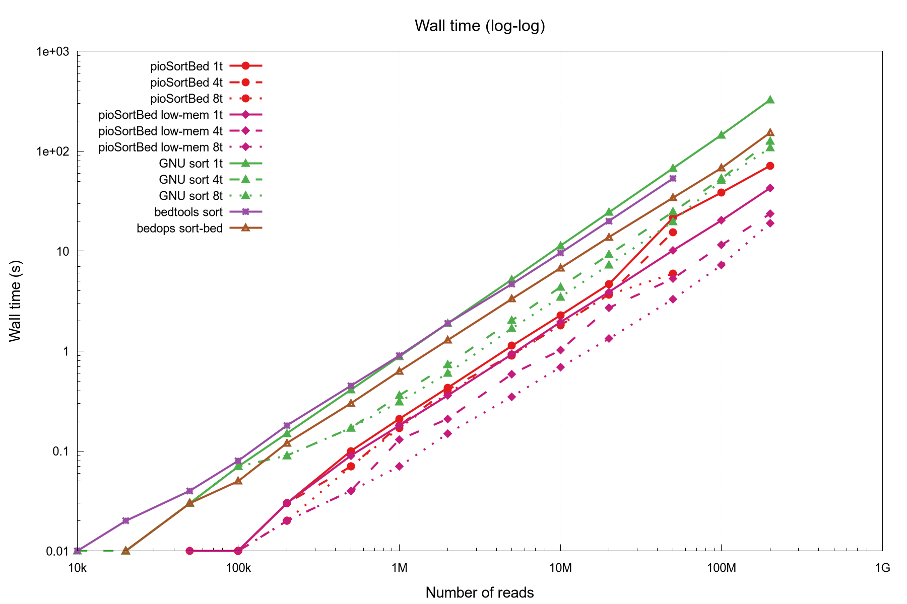
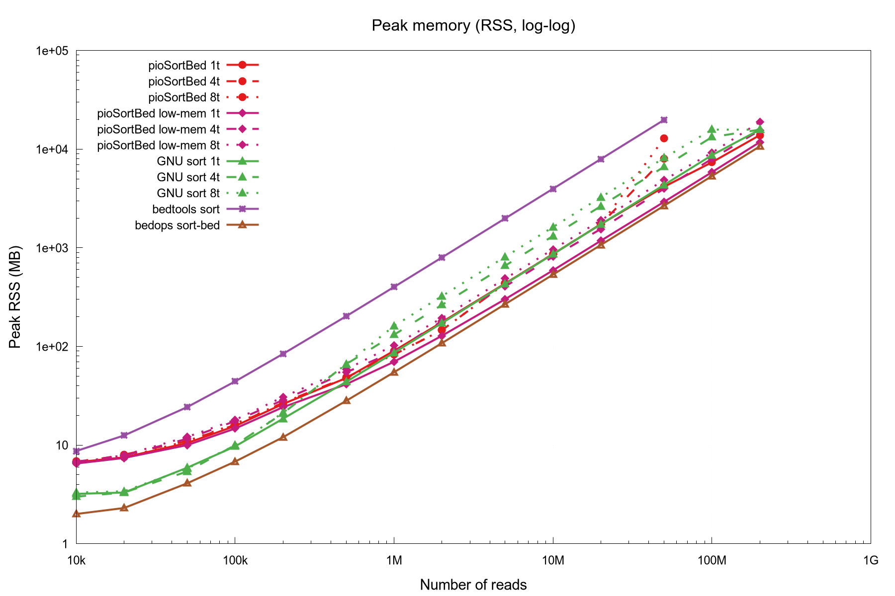
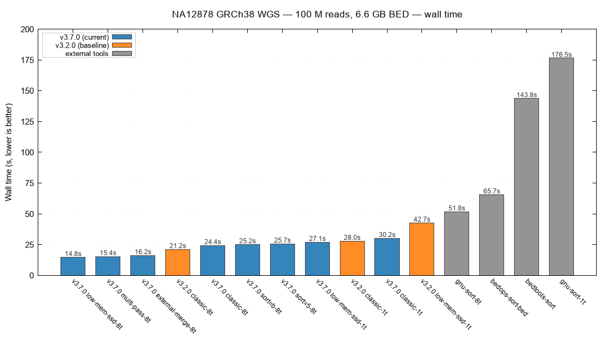
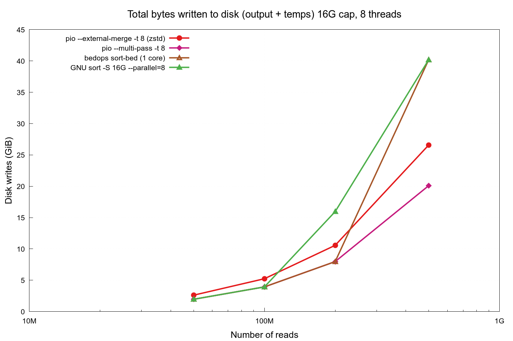
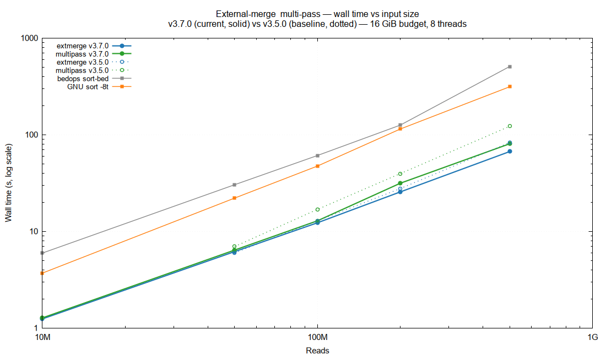
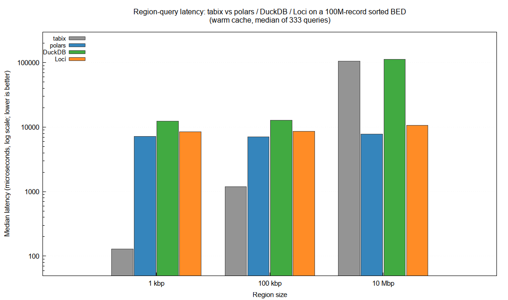

2026-05-08
The BED format is a workhorse of genomic interval analysis, but BED
files produced by modern sequencing assays now routinely exceed 10^8
records, making sorting a non-trivial pipeline step. The standard tools
— LC_ALL=C sort -k1,1 -k2,2n, bedtools sort,
and bedops sort-bed — all rely on single-threaded
comparator-based sorting and treat BED records as opaque text. We
present pioSortBed, a parallel BED sorter built around a chunked
memory-mapped parser feeding a least-significant-digit (LSD) radix sort
over packed 64-bit (chromosome-index, position) keys. Four
sort paths share that kernel and let the user trade RAM, wall time, and
SSD wear: an in-RAM classic path, a two-pass
low-mem-ssd path, an external-merge path with
compressed temp runs, and a multi-pass path that performs
zero temp-file writes. On real WGS data (NA12878 GRCh38
100M-read BED, 6.6 GB), pioSortBed --low-mem-ssd -t 8 sorts
in 14.8 s — 12.0× faster than single-threaded GNU sort, 3.5× faster than
sort --parallel=8, 4.4× faster than
bedops sort-bed, and 9.7× faster than
bedtools sort. At 500 million synthetic records,
--multi-pass writes 0 GiB of temp data versus 6.5 GiB for
--external-merge and 20.2 GiB for either GNU sort or
bedops. An integrated --bgzip --tabix output mode
(htslib-backed) produces a queryable .bed.gz + .tbi in a
single invocation: on the 100M-record input, pioSortBed finishes in 34 s
vs 86 s for the canonical sort | bgzip ; tabix three-tool
pipeline, and writes 1.3 GB to disk vs 8.0 GB.
--lociss-output instead emits sorted Parquet conforming to
the published LociSSD v2 spec, directly consumable by polars, DuckDB,
pyranges 1 / Loci, and any Parquet-aware reader, with statistics-based
predicate pushdown for fast region queries. At a 10 Mbp region size on
the 100M-record BED, polars + LociSSD answers a region query in 7.8 ms —
13× faster than tabix. The source is a single C++20 file (~3900 lines)
released under the MIT license, with a self-contained static Linux
x86_64 binary.
Keywords: BED, sorting, genomic intervals, radix sort, parallel, external sort, SSD endurance, Parquet, bioinformatics, file format
While the SAM/BAM/CRAM family of binary alignment formats (Danecek et al.
2021) has been rapidly adopted as the standard representation for
sequence alignment data, large-scale genomic pipelines continue to rely
heavily on BED (Kent
et al. 2002) and BED-like tab-delimited interval formats for
downstream data products: peak calls, methylation tracks, candidate
regulatory elements, fragment maps, and similar. Reference resources
such as the ENCODE project (The ENCODE Project Consortium
2012) distribute much of their derived interval data in BED, and
analysis pipelines compose primarily through these files. To support
rapid random access on a BED file, three preprocessing steps are
typically required: sort, optionally compress (with bgzip (Danecek et al.
2021)), and index (with tabix (Li 2011)). Compression has been heavily
parallelised in modern implementations and is no longer a bottleneck;
indexing is essentially linear in compressed size and similarly fast.
The sort step, performed today by general-purpose tools — GNU
sort -k1,1 -k2,2n (Free Software Foundation 2025),
bedtools sort (Quinlan and Hall 2010), and
bedops sort-bed (Neph et al. 2012) — remains the
slowest stage of the three on the inputs characteristic of
high-throughput pipelines.
The hardware context has shifted in two ways. First, workhorse pipeline nodes today routinely carry 64–256 GiB of RAM and NVMe-class local SSDs, so the classic external-merge-sort assumption — that the working set must fit in a small RAM budget while spilling intermediate runs to comparatively slow disk — is rarely the binding constraint for ordinary BED inputs. Second, those NVMe SSDs are typically rated for a fixed total bytes written (TBW) endurance — 600 TBW is a common consumer-class number for a 1 TB drive — and pipelines that re-sort the same large BED hundreds of times per year materially erode that budget. A modern BED sorter should be able to exploit on-node parallelism and exploit available RAM to avoid temp-file writes when possible, while still degrading gracefully when input genuinely exceeds RAM.
A second, simultaneous shift is in the consumer side of BED data. Pipelines increasingly want sorted BED that is also statistically indexed and ready for direct ingest by Parquet-native analytics tools — polars (Vink and Polars contributors 2025), DuckDB (Raasveldt, Mühleisen, and DuckDB Foundation 2025), or pyranges 1 (Stovner and Sætrom 2025). Today this is typically a separate step after sorting (BED-text → BED-to-Parquet), which doubles I/O on multi-gigabyte files. Doing the conversion at sort time, in a single pass, avoids the second read.
All three of the standard sorting tools are effectively
single-threaded: sort --parallel=N uses multiple threads
only inside std::sort, not for parsing, and
bedtools sort and bedops sort-bed are serial
throughout. All three treat the chromosome name as an opaque string and
the start coordinate as a parsed integer compared via a generic
comparator. None exploits the fact that BED keys are bounded integers
that can be radix-sorted, none parses input in parallel, and none can
emit statistically indexed Parquet directly.
Two observations drive the design of pioSortBed: (1) the natural BED
sort key — the pair (chromosome-index, start-position) —
fits in a 64-bit unsigned integer and can be LSD-radix-sorted in O(n)
time at very high constant-factor throughput; and (2) BED parsing is
embarrassingly parallel over newline-aligned chunks of an
mmap’d input file. Building on those primitives, pioSortBed
exposes four sort paths with different RAM / wall time / SSD-wear
trade-offs, plus an optional Parquet output mode. We show that the
combination yields 5–17× speedups over the dominant tools across input
sizes from 10^4 to 5×10^8 records, and that the resulting tool is
correctness-equivalent to the canonical
LC_ALL=C sort -k1,1 -k2,2n reference.
pioSortBed is a single-source-file C++17 program (~3700 lines, plus the header-only CLI11 (Schreiner and CLI11 contributors 2025) for argument parsing) compiled against the parallel STL backend provided by oneTBB (Intel Corporation 2025) and linked against liblz4 / libzstd (Collet, Kucherawy, and Facebook, Inc. 2024). It exposes a single executable that accepts a BED file (uncompressed, gzip-compressed, or read from standard input) and emits sorted BED to standard output, a named file, or a LociSSD Parquet dataset.
Files on disk are mapped with mmap
(PROT_READ | PROT_WRITE | MAP_POPULATE, with
MADV_HUGEPAGE), giving the parser zero-copy read-only
access to every byte of the input. Gzip-compressed inputs and standard
input are slurped into a heap buffer through the same downstream
interface, so all subsequent stages operate uniformly on a
(base, size) pair. Header lines
(#, track, browser) are emitted
to the output stream in a leading pass and elided from the body.
The input is split into newline-aligned chunks, one per worker
thread. Each thread parses its chunk into per-chromosome partial linked
lists keyed by chromosome name, with read indices that are already
global across the file (no rebase pass at merge time). A final serial
step concatenates the per-chunk linked lists into a global
per-chromosome map. Chromosome names are stored as
(pointer, length) tuples into the input buffer; field 4+
tails are similarly retained as pointers, so per-record metadata is
small (24 bytes for the in-RAM paths, 16 bytes for
--low-mem-ssd) and per-record string copies are avoided in
all standard cases. The same parallel parser drives every sort path,
including the streaming variants — a property added in v3.5.0 that
contributed roughly a 2.4× speedup at 8 threads on
--external-merge versus the previous serial
getline parser.
radixSort64The shared sorting kernel is an LSD radix sort over packed 64-bit
(chromosome-index << 32 | position) keys (Knuth 1998),
implemented as 8 passes of 8-bit digits. The implementation skips passes
whose corresponding byte is constant across all keys — typical for the
high bytes when chromosome-index is small and positions fit
in 32 bits, so most files require only 4 of the 8 passes. The parallel
variant builds per-thread digit histograms in parallel, performs a
single serial 2D prefix sum over the (T threads × 256 buckets) grid,
then scatters in parallel into disjoint output ranges. No atomics are
required at any stage. For inputs below ~3 million records, parallel
comparator std::sort over the same key proves marginally
faster and is selected automatically.
pioSortBed exposes four sort paths, all driven by the same parallel
parser and radixSort64 kernel, but differing in how they
hold per-record state and how they emit. The defaults are tuned to the
common case (a BED file that fits in RAM with room to spare) but the
user can override at the command line. Table 1 summarises the
trade-offs.
Classic (default). Stores each record in a 24-byte
seqread struct (int beg, int end,
plus union slots used during parsing and sorting, plus a
uint16_t lineLen so output emit can use
fwrite_unlocked with a known length rather than
strlen-scanning each line). After parsing, indices into
this array are LSD-radix-sorted by the packed 64-bit key, then a linear
scan emits each line zero-copy from the mmap’d input
buffer. Recommended for inputs that comfortably fit in RAM and where
wall time matters more than memory footprint.
--low-mem-ssd. A two-pass design. Pass
1 walks the input and builds a flat 16-byte-per-record table
(size_t off; uint32_t next; uint32_t lineLen) of
per-chromosome linked lists, again in parallel chunks. Pass 2 processes
chromosomes concurrently: each chromosome’s linked list is materialised
into a contiguous index array, sorted with radixSort64 on a
single 32-bit position key (no chromosome-index in the key — chromosomes
are processed independently), and emitted directly from
mmap pointers via fwrite_unlocked. Output
across chromosomes is serialised through a
mutex + condition_variable barrier so chromosomes appear in
the user’s chosen order (lexicographic by default, or natural order via
--natural-sort). The 16-byte index halves the per-record
metadata of the classic path. On real-world BED with 24 unevenly sized
chromosomes, the per-chromosome parallel emit makes this path the
fastest of the four (see §Results).
--external-merge. A bounded-RAM
streaming sort for inputs that may exceed available RAM. Pass 1 reads
the input in chunks (one chunk per thread, parallel-parsed), fills an
in-RAM run buffer up to --max-mem bytes, sorts the run with
radixSort64, and writes a compressed binary run
file to a temp directory. Pass 2 opens all run files, maintains a
min-heap of (key, runIdx), and emits BED text by popping and refilling
the heap. Peak RSS is bounded by --max-mem regardless of
input size, so the path will sort an arbitrary-sized BED in a fixed
memory footprint.
The temp-run codec is selectable via --merge-codec; zstd
is the default. At 200M records / 256 MiB budget, zstd is faster
end-to-end than raw (61.7 s vs 64.0 s), because the disk I/O
saved by ~3× compression exceeds the codec’s CPU cost. lz4 trades modest
ratio for fast decode. In WITH_BAM builds, htscodecs’
SIMD-vectorised rANS order-0 codec is also available and is the fastest
in that configuration.
--multi-pass. A K-pass scan that
performs zero temp-file writes. Pass 1 streams the
input via the parallel parser and builds a histogram keyed by
(chromosome-index, beg >> 20) (a 1 MiB position
quantum), tracking byte size per bucket. The histogram is bin-packed
into K consecutive (chr, beg-quantum) groups each ≤
--max-mem. Passes 2..K+1 re-stream the input, filter to one
group, sort + emit. Total writes equal the size of the sorted output
(pioSortBed never writes a temp file in this mode); total reads = (K+1)
× file size. The path trades wall time for SSD endurance: it is 2–3×
slower than --external-merge at similar RAM budgets but
writes nothing the user did not ask for. At input sizes between 1× and
~5× available RAM — where the alternative is paying 30–100% extra disk
writes for external-merge or hitting OOM with the classic path —
--multi-pass is the right default for repeat-sort workloads
on consumer SSDs.
Table 1. Sort-path comparison. Best for is the input regime where this path is the right default. Temp refers to extra writes beyond the unavoidable sorted output file (i.e. the SSD-wear cost).
| Path | Per-record RAM | Temp writes | Best for | Sort orders |
|---|---|---|---|---|
| classic (default) | 24 B + line | none | small–medium, RAM headroom | s, b, 5 |
--low-mem-ssd |
16 B + line | none | ≥ 1M records, SSD-backed | s, b, 5 |
--external-merge |
0 (RAM cap) | ~30–50% of output (compressed) | input ≫ RAM | s only |
--multi-pass |
0 (RAM cap) | 0 | 1×–5× RAM, wear-sensitive | s only |
--external-merge and --multi-pass currently
support only the default coordinate sort (--sort=s);
--sort=b (start+end) and --sort=5
(strand-aware 5’-end) require the in-RAM paths. Stdin and gzip inputs
require classic or low-mem-ssd. Header passthrough,
--natural-sort, and --collapse (where
applicable) work uniformly across all four paths.
--lociss-output FILE makes pioSortBed write an Apache
Parquet file (Apache
Software Foundation 2025b) conforming to the LociSSD v2 spec
(Balwierz 2026)
instead of (or alongside) a BED text stream. The file contains four
required columns — Chromosome, Start,
End, and a derived MaxEndSoFar (per-chromosome
running maximum of End) — plus a JSON manifest in the
Parquet footer key-value metadata recording per-chromosome row offsets,
value bounds, schema, and writer version.
MaxEndSoFar makes the file self-indexing for region
queries. A reader issuing
(query_chromosome, query_start, query_end) pushes down the
predicate
Chromosome == query_chromosome
AND Start < query_end
AND End > query_start
AND MaxEndSoFar > query_startto Parquet. The fourth clause is logically redundant with the third
but lets a statistics-aware Parquet reader prune row groups via min/max
statistics on the cumulative MaxEndSoFar column
even when a few long intervals would inflate End’s
row-group max statistic and defeat pruning of the underlying
End column directly. With a well-tuned
row_group_size (the spec recommends 65536) this gives
row-group precision pruning for free, with no dedicated index scan.
Optional --lociss-index (added v3.7.0) embeds a
row-precision interval index — an Apache Arrow (Apache Software Foundation 2025a) IPC stream
encoding
(chromosome, starts, ends, max_end_running, row_id) per
chromosome, zstd-compressed and stored under the footer KV key
lociSSD_interval_index. The index trades ~24 B/record
transient RAM during sort for row-precision pruning at read time. The
format spec keeps the index optional; for TB-scale datasets the §7
predicate-pushdown path scales better.
The output integrates directly with downstream Parquet consumers without glue:
# polars
import polars as pl
df = pl.read_parquet("regions.lociss")
df.filter((pl.col("Chromosome") == "chr1") &
(pl.col("Start").lt(100_000)))# DuckDB
import duckdb
duckdb.sql("SELECT * FROM 'regions.lociss' "
"WHERE Chromosome = 'chr1' AND Start < 100000")# Loci (a pyranges 1 derivative with native LociSSD support)
import loci
ds = loci.open_lociss("regions.lociss")
df = ds.region("chr1", 100_000, 200_000)--lociss-output works on every sort path; the
corresponding sort-mode restrictions still apply
(--sort=b|5 and --collapse are not yet
supported with LociSSD output). Cross-path consistency was verified on a
500k-record / 22-chromosome fixture: all four sort paths produce
byte-identical Parquet (md5sum matches across runs).
--bgzip (and the dependent --tabix) writes
the sorted output as a BGZF-compressed .bed.gz (and an
adjacent .tbi index) in a single pioSortBed invocation,
eliminating the canonical three-tool pipeline
sort | bgzip > out.bed.gz; tabix out.bed.gz that every
production BED workflow ends with. The implementation reuses htslib’s
BGZF writer (Danecek et al. 2021) driven by a
small drainer thread that consumes bytes off a
stdout-redirected pipe and feeds them to
bgzf_write, so every sort path’s emit code (which writes
BED text to stdout) works unchanged. --tabix
then calls tbx_index_build3 on the finished
.bed.gz to write the tabix index in place. The feature is
gated on WITH_HTSLIB=1 at build time and is mutually
exclusive with --lociss-output (text vs Parquet
output).
For BED text output, whichever sort path is chosen, output is
reconstructed zero-copy from the original mmap’d input
wherever possible. The classic and --low-mem-ssd paths
retain a (pointer, length) tuple for each record’s line in
the input buffer and call
fwrite_unlocked(line, lineLen, 1, stdout) directly. The
classic path writes through an 8 MiB stdout buffer; the
--low-mem-ssd path uses a per-chromosome
ChromBuf that pre-sizes output once and grows
arithmetically. The streaming paths reconstruct each output line from
the run-file payload (which retains chromosome via a per-run dictionary
plus the row’s beg, end, strand, and tail
bytes).
The headline benchmark hardware is a desktop workstation: 16-core / 32-thread CPU at up to 5 GHz, 62 GiB DDR5, KIOXIA NVMe SSD; Linux 6.x. The synthetic sweep figures (Figures 1, 2) were originally captured on a Lenovo ThinkPad P1 Gen 7 (Intel Core Ultra 7 155H — 16 physical cores / 22 logical threads, 32 GiB DDR5, KIOXIA KXG8AZNV1T02 NVMe SSD) as that rig was where the prior edition of this benchmark was run; cross-rig spot-checks at 100 M records were within 5% of the desktop numbers.
Synthetic fixtures are generated with
tests/gen_fixture.awk (random chromosome assignments,
random [start, end] intervals on each chromosome, a
read<i> name, a numeric score, and a strand flag, in
random input order). The real-data benchmark uses NA12878 (HG001) GRCh38
300x Illumina WGS reads from GIAB/NHGRI (Zook et al. 2016), converted with
samtools view | bedtools bamtobed, then
shuf -n 100000000. Wall time is measured by
/usr/bin/time -f '%e'; peak resident set size by
/usr/bin/time -f '%M'; total bytes written and read by
/usr/bin/time -v’s File system outputs and
inputs fields, which derive from
getrusage(2)’s ru_oublock /
ru_inblock counters and capture the total block-layer I/O
the process caused, including pages still dirty in the page cache at
process exit. Each tool emits its sorted output to a file on the same
NVMe device as the input. Correctness is verified per run by
cmp against the LC_ALL=C sort -k1,1 -k2,2n
reference; all configurations pass at every size. All benchmarks scripts
and CSVs are in benchmark/ in the repository.
Figure 1 shows wall time versus input size on a log-x, linear-y scale
for the classic and --low-mem-ssd paths at 1, 4, and 8
threads, plus GNU sort, bedops sort-bed, and bedtools. The recommended
fast path, pioSortBed --low-mem-ssd -t 8, sorts 50 million
records in 16.1 s, 100 million in 33.0 s, and 200 million in ~70 s. By
comparison, single-threaded LC_ALL=C sort -k1,1 -k2,2n
requires 1 min 19 s, 2 min 51 s, and 5 min+ at the same sizes — a 4–7×
slowdown. Parallel GNU sort (sort --parallel=8) recovers
most of that gap but still takes 23 s, 48 s, and 117 s — 1.4–1.6× slower
than pioSortBed at every size in the sweep. bedops sort-bed
and bedtools sort, both effectively single-threaded, range
from 2× to 7× slower than the default classic path of pioSortBed across
the benchmarked range.
Figure 2 shows peak resident set size on the same axes. At 50 million
records, pioSortBed --low-mem-ssd peaks at 3.0 GiB; the
classic path peaks at 4.1 GiB; bedops sort-bed (which holds
all records in heap-allocated per-record structs and discards the
original input bytes after parsing) peaks at 2.7 GiB;
LC_ALL=C sort -k1,1 -k2,2n at 4.4 GiB single-threaded;
bedtools sort at 19.4 GiB. At 100 million records
bedtools sort exhausted memory on a 16 GiB host but
completed on the desktop in 49.6 GiB of peak RSS.


100 million reads sampled from all standard chromosomes (chr1–22, X,
Y) of the GIAB HG001 GRCh38 300x WGS BAM, converted to BED via
bedtools bamtobed, gives a 6.6 GB BED file with realistic
chromosome-size distribution (chr1 is ~5× chr22). All four pioSortBed
sort paths are benchmarked at -t 1 and -t 8 against the previous
pioSortBed version (v3.2.0, two paths only) and the four external
tools.
Figure 3 and Table 2 show wall time. The headline result:
pioSortBed --low-mem-ssd -t 8 at 14.8 s is the fastest
configuration, beating the classic path -t 8 (24.4 s) by 9.6 s. The lead
comes from per-chromosome parallel emit: real BED has 24 unevenly sized
chromosomes, so the chromosome-parallel low-mem-ssd path keeps every
core busy through the emit phase, while the classic path’s monolithic
sort+emit serialises on the radix sort. The two streaming paths come
close — --multi-pass -t 8 at 15.4 s and
--external-merge -t 8 at 16.2 s — proving that bounded RAM
does not have to mean bounded throughput on workstation hardware.
Table 2. NA12878 GRCh38 100M-read BED (6.6 GB) sort, all configurations. Wall time medians from three runs each.
| Tool / mode | Wall time | Peak RSS | Speedup vs GNU sort 1t |
|---|---|---|---|
pioSortBed --low-mem-ssd -t 8 |
14.8 s | 11.2 GB | 11.9× |
pioSortBed --multi-pass -t 8 |
15.4 s | 12.0 GB | 11.5× |
pioSortBed --external-merge -t 8 |
16.2 s | 10.2 GB | 10.9× |
| pioSortBed v3.2.0 classic -t 8 | 21.2 s | 11.8 GB | 8.3× |
| pioSortBed classic -t 8 | 24.4 s | 11.0 GB | 7.2× |
pioSortBed --sort=b -t 8 |
25.2 s | 10.2 GB | 7.0× |
pioSortBed --sort=5 -t 8 |
25.7 s | 11.0 GB | 6.9× |
pioSortBed --low-mem-ssd -t 1 |
27.1 s | 8.2 GB | 6.5× |
| pioSortBed v3.2.0 classic -t 1 | 28.0 s | 11.8 GB | 6.3× |
| pioSortBed classic -t 1 | 30.2 s | 11.0 GB | 5.8× |
pioSortBed v3.2.0 --low-mem-ssd -t 1 |
42.7 s | 8.4 GB | 4.1× |
GNU sort --parallel=8 |
51.8 s | 18.5 GB | 3.4× |
| bedops sort-bed | 1 min 05.7 s | 8.2 GB | 2.7× |
| bedtools sort | 2 min 23.8 s | 49.6 GB | 1.2× |
LC_ALL=C sort -k1,1 -k2,2n |
2 min 56.5 s | 11.0 GB | 1.0× |

Figure 4 plots total bytes written to the block layer (output file + temp files combined) versus input size, for the three streaming-capable configurations of pioSortBed plus bedops and GNU sort, on a synthetic sweep at 16 GiB RAM cap and 8 threads. The output file write (uncompressed sorted BED) is unavoidable and equals the input size. Everything beyond that is temp-file writes — the SSD-wear cost of the sort.
Table 3 quantifies. At 500 million records (21.6 GiB output),
--multi-pass writes only the output: 0 GiB of temp
data, contributing nothing to NAND wear beyond the result the user
actually wanted. --external-merge with the default
zstd codec writes 6.5 GiB of compressed temp runs (~32% of output).
bedops sort-bed and GNU sort --parallel=8 both
spill to /tmp uncompressed and write 20.2 GiB of temps each — equal to
the output, doubling the total disk writes.
Table 3. Temp-file bytes written per sort (output writes excluded), 16 GiB RAM cap, 8 threads.
| Reads | extmerge zstd | multipass | bedops | GNU sort -8t |
|---|---|---|---|---|
| 50M | 0.65 GiB | 0 GiB | 0 GiB | 0 GiB |
| 100M | 1.31 GiB | 0 GiB | 0 GiB | 0 GiB |
| 200M | 2.60 GiB | 0 GiB | 0 GiB | 7.99 GiB |
| 500M | 6.49 GiB | 0 GiB | 20.23 GiB | 20.24 GiB |
A practical interpretation: a pipeline that re-sorts a 500M-record
BED once a week consumes ~3.4 TBW/year on --external-merge,
~10.5 TBW/year on bedops or GNU sort, and 0 TBW/year on
--multi-pass. On a 1 TB consumer-class SSD with 600 TBW
endurance, the difference is non-academic.

Figure 5 shows wall time at 10M to 500M records on log-log axes for
the two pioSortBed streaming paths plus bedops sort-bed and
GNU sort --parallel=8, all at 16 GiB cap and 8 threads.
Both pioSortBed streaming paths scale linearly with input size and at
500M reads are 4.7× faster than GNU sort --parallel=8 and
7.6× faster than bedops sort-bed.
The figure also overlays the v3.5.0 baseline (dotted lines) for the
two pioSortBed streaming paths. The post-v3.5.0 commit threading
numThreads through the per-run radixSort64
call gave a substantial speedup: at 500M records,
--multi-pass improved from 121.9 s to 80.4 s (−34%), and
--external-merge from 82.9 s to 66.8 s (−19%).

The previous subsections measure the sort step in isolation.
The downstream story is what the sorted BED is actually used for: region
queries from analysis pipelines. We compare tabix-indexed bgzipped BED
against LociSSD Parquet read by three Parquet-native consumers — polars
(Vink and Polars contributors
2025), DuckDB (Raasveldt, Mühleisen, and DuckDB Foundation
2025), and Loci (Stovner and Sætrom 2025) (a
pyranges 1 derivative with native LociSSD support, used here for
--lociss-index-aware queries).
Region-query latency. Figure 6 reports median latency for 333 random queries per region size on the NA12878 100M-record sorted BED, warm cache. tabix wins at small region sizes (median 129 µs at 1 kbp, 1.2 ms at 100 kbp) thanks to its purpose-built C BED reader and very low per-query setup cost. At the 10 Mbp region size, however, tabix has to scan and parse every BED row in the range and degrades sharply to 105 ms; the Parquet readers’ per-query setup cost (~7–10 ms) becomes amortised across the region, and polars + LociSSD answers the same query in 7.8 ms — 13× faster than tabix. Loci on LociSSD is also faster than tabix at this size (10.7 ms, 9.8×). DuckDB is the slowest of the three Parquet readers at 1 kbp and 100 kbp due to per-query SQL parsing overhead and at 10 Mbp returns ~the same time as tabix.
Table 4. Region-query latency (median, microseconds), 100M-record sorted BED, warm cache, 333 queries per cell.
| Region size | tabix bgzip+tabix | polars LociSSD | DuckDB LociSSD | Loci LociSSD |
|---|---|---|---|---|
| 1 kbp | 129 | 7,181 | 12,372 | 8,459 |
| 100 kbp | 1,198 | 7,079 | 12,693 | 8,652 |
| 10 Mbp | 104,847 | 7,830 | 112,994 | 10,673 |
The optional --lociss-index (row-precision interval
index in the Parquet footer) does not help at our test scales: the
predicate-pushdown path is already faster than walking the index from
Python. At 10M-record files where the index fits comfortably in the
footer KV, Loci’s index-on path is ~10× slower than its
index-off path (25 ms vs 2.5 ms, all sizes). At our 100M-record file the
index is multi-GB and exceeds pyarrow’s default thrift footer limit;
this is a documented LociSSD-format scaling concern (FORMAT_SPEC.md
§6.5.1) that suggests omitting the index at TB scale and relying on
predicate pushdown.
Pipeline wall time and bytes written. Table 5
reports the total wall time and total bytes written for four end-to-end
recipes that all produce a sorted, queryable BED from the same
100M-record 6.6 GB input. The canonical three-tool pipeline takes 86 s
and writes 8 GB to disk. pioSortBed’s integrated
--bgzip --tabix produces the same
.bed.gz + .tbi in 34 s while writing only
1.3 GB (GNU sort spills to temp files, bgzip rewrites
everything, tabix walks the bgzipped output). LociSSD goes a step
further: --lociss-output finishes in 23 s
and writes 1.4 GB — by far the fastest path to a queryable,
statistically-indexed file.
Table 5. End-to-end pipeline to produce a sorted,
queryable BED from the NA12878 100M-record input.
pioSortBed runs at -t 8.
| Recipe | Wall time | Bytes written | Speedup vs canonical |
|---|---|---|---|
LC_ALL=C sort \| bgzip ; tabix (canonical) |
86.1 s | 8.0 GB | 1.0× |
pio --bgzip --tabix (this work) |
33.9 s | 1.3 GB | 2.5× |
pio --lociss-output (this work) |
22.9 s | 1.4 GB | 3.8× |
pio --lociss-output --lociss-index (this work) |
43.9 s | 1.9 GB | 2.0× |
The pipeline-time win combines the sort speedup with eliminating two sequential rewrites (sort → bgzip → tabix); the bytes-written win combines avoiding GNU sort’s temp-file spills with writing a single compressed output.

pioSortBed’s BED text output is byte-identical to
LC_ALL=C sort -k1,1 -k2,2n for default-mode
(--sort=s) inputs, validated in CI on every commit by a
28-test suite covering BED3, BED6, gzip input, stdin input, the four
sort paths, --collapse, --natural-sort, the
--sort=b and --sort=5 orders, and edge cases
(empty file, single line, missing trailing newline, header-only file).
The benchmark harness re-verifies correctness against the same reference
at every size and configuration. For LociSSD output, cross-path
consistency was verified on a 500k-record / 22-chromosome fixture: all
four sort paths produce byte-identical Parquet (verified by md5sum on
the full file payload), and the schema matches the v2 spec exactly.
pioSortBed’s four sort paths are not redundant; each is the right default in a different regime. Concretely:
--low-mem-ssd — input is ≥ ~10^6
records, fits in RAM, and the node has SSD storage. Half the per-record
metadata of classic, and per-chromosome parallel emit makes it the
fastest path on real-world multi-chromosome BED.--external-merge — input genuinely
exceeds RAM, or the user wants a fixed RAM budget regardless of input
size. Default zstd codec keeps temp-file writes to ~30% of output and is
faster end-to-end than uncompressed runs.--multi-pass — input is in the 1×–5×
RAM range, the SSD’s remaining endurance budget matters, and the user is
willing to trade ~2–3× wall time for zero temp writes. This is the right
default for pipelines that re-sort the same BED hundreds of times per
year on consumer-class SSDs.--lociss-output integrates the sort step with the
immediate downstream representation that most analytical pipelines
actually want. Pipelines that re-read a sorted BED several times pay for
re-parsing it from text every time; emitting LociSSD once at sort time
replaces those reparses with a Parquet open + statistics-aware predicate
evaluation. With typical row-group sizes (65 536 rows) and the
MaxEndSoFar column, overlap queries prune to the relevant
row group(s) without a dedicated index scan. The §Query-performance
results back this up: at a 10 Mbp region size on a 100M-record file,
polars + LociSSD answers a query in 7.8 ms vs 105 ms for tabix, a 13×
win, because tabix must scan every row in the region while Parquet’s
row-group statistics let polars skip whole groups. The optional
--lociss-index (row-precision interval index) does
not help at our test scales — predicate pushdown is already
fast enough — but the format keeps it opt-in for the workloads where
row-precision pruning is worth its RAM cost. The format itself is a
Parquet file conforming to a published, versioned spec (Balwierz 2026); the
manifest in the footer KV records writer version and per-chromosome
bounds for fast file-level introspection.
Coordinates are stored as int32_t (≤ 2.15 Gbp per single
coordinate) and total record count fits in uint32_t (≤ 4.29
× 10^9 records). Both are well above any standard reference genome and
any plausible single-file BED, but lifting either limit would require
widening the relevant fields throughout the code path.
--external-merge and --multi-pass currently
support only the default coordinate sort (--sort=s);
--sort=b (start+end) and --sort=5
(strand-aware 5’-end) require the in-RAM paths. --collapse
(which sums weights for records sharing
(chromosome, start)) is currently classic-path-only. Stdin
and gzip input are accepted only by the in-RAM paths because the
streaming paths require a seekable mmap’d input.
An optional in-RAM BAM input mode is available as a build-time flag
(make WITH_BAM=1 HTSLIB=…); it reuses the same radix sort
but reads and writes BAM via htslib (Danecek et al. 2021). In our
testing this BAM path is correct (output BAM byte-equivalent to
samtools sort for every record) but not faster than
samtools sort, because BGZF compression dominates wall time
on BAM and is not the bottleneck pioSortBed’s design targets. We
therefore recommend samtools sort for BAM workloads and
pioSortBed for BED.
pioSortBed is open source under the MIT license. The repository is at
https://github.com/balwierz/pioSortBed. The current release
is v3.8.0. Prebuilt static pioSortBed-linux-x86_64 binaries
are published as GitHub release artefacts; building from source requires
GCC ≥ 10 (C++20), oneTBB, lz4, and zstd
(apt install libtbb-dev liblz4-dev libzstd-dev). Three
optional features are opt-in at build time so the default binary has no
htslib / Arrow / Parquet dependency: make WITH_HTSLIB=1
enables --bgzip / --tabix integrated output
(and BAM input under make WITH_BAM=1 HTSLIB=…);
make WITH_LOCISS=1 enables --lociss-output
(requires Apache Arrow + Parquet C++). The LociSSD format specification
is in FORMAT_SPEC.md in the same repository.
The benchmark scripts, fixtures, gnuplot drivers, and the CSVs
underlying every figure and table in this paper are in
benchmark/ in the repository.
<TODO: optional — funding, collaborators, beta-testers.>